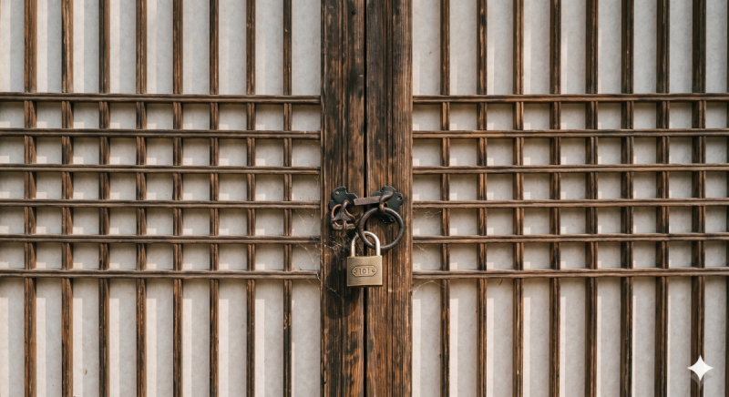

메시지 내용
지친 일상으로부터 잠시 나온 당신. 강원도의 어느 게스트 하우스로 휴가를 왔다.
게스트 하우스 문턱을 넘어서자마자 더운 바람이 목덜미를 스칩니다. 숙소를 찾기 위해서는 비밀번호가 필요합니다. 5장소에서 비밀번호에 대한 힌트를 모아보세요.
힌트가 있는 장소입니다. 선택하여 힌트를 모으세요.
해당 장소에 도착해 발견한 스토리와 상황 묘사가 나타납니다.
퀴즈 질문이 들어갑니다.

5개의 비밀번호를 모두 모았습니다! 당신은 수집한 비밀번호로 방문을 열려고 합니다. 하지만 거기에 있는 것은 2개의 자물쇠. 하나를 더 풀어야만 합니다.
열심히 봉사하는 우리들. 화이팅!!814 = black815 = red816 = ?
끼이익... 문이 열리면서 작은 소리가 납니다. 청년 대회의 시작입니다.